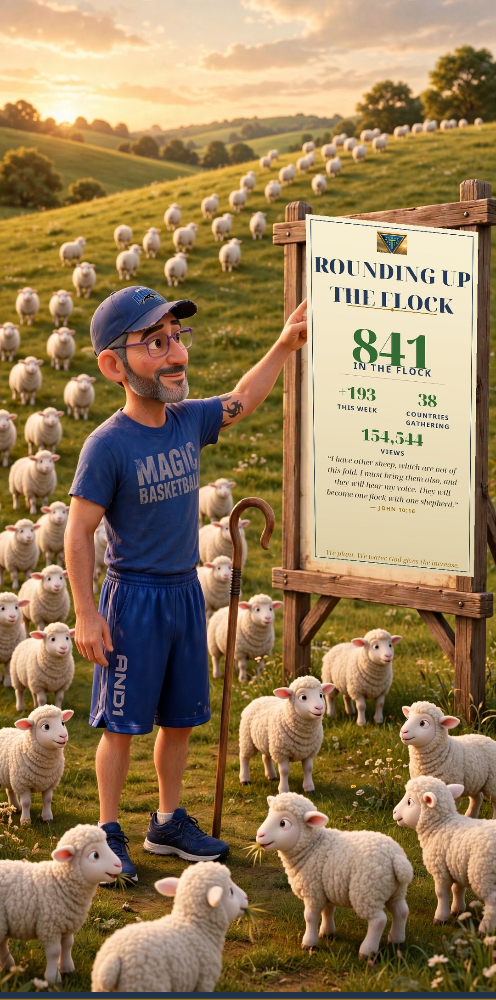

![The TruVINE emblem — a vine in a triangle]()
FOR WILL
Everything on this page is counted true and said plain, Will — take your time with it. There’s no hurry here.

Pinned to the Board
a place kept, not a claim madeFor our honored guest
The newest place on this board has a name on it — Will, from Circle K. The flock counted 841 tonight. This spot stays pinned up for you, friend — the door’s open whenever.
New Here? Tap One
plain words, no church-speak requiredWhat’s TruVINE?
TruVINE is Jason’s YouTube channel — Bible stories and whole chapters, told plain and warm, free for anybody to watch. It started small, the way a seed does, and the Lord has been growing it ever since. The numbers below are just the counting of it.
What’s the Bible app?
Word of God Risen is a free app Jason built so anybody can read the Bible — or simply listen to it read aloud in Grandpa Teddy’s voice. The whole Book is on it: all 1,503 chapters. No cost, no sign-up, nothing asked of you.
Why sheep?
Because that’s Jesus’ own picture for people He loves. He called Himself the Good Shepherd and said, “I have other sheep, which are not of this fold. I must bring them also, and they will hear my voice. They will become one flock with one shepherd” (John 10:16). And in Luke 15, the shepherd leaves the ninety-nine to go after the one who’s lost — because around here, every single sheep gets special treatment. That’s why this page was made for one man, by name.
The YouTube Channel
TruVINE — Bible stories, told for anybodyHere is what the numbers mean, plain and simple:
Times somebody pressed play and sat down to watch.
People who asked to keep hearing — the ones who come back.
Stories and chapters from the Bible — every one free to watch.
People in 38 countries have watched
Every country counted — big or small, nobody left off the list:
Bars are drawn on a square-root scale, so the smallest seeds can be seen at all — the order is the true order and every number is the exact count. Counted October 15, 2026, from YouTube’s own numbers — the channel’s whole recorded history (January 1, 2024 – October 13, 2026). Of 156,281 views in that time, YouTube could name a country for 107,984; the rest came with none attached — and this page does not guess at them.
Word of God Risen
read it or hear it — free for anybodyThe app’s first counted week — October 7–14, 2026. Most visitors arrived from the YouTube channel.
Where the visitors came from
One reader is still a planting — the smallest seed is drawn at its true size.
Where they stopped longest
The pages people opened most, that same week:
- The Front Door32
- The Parables11
- Matthew, chapter 17
- Genesis6
The app began counting its own reading on October 15, 2026.
Since then: 8 chapters read · 7 chapters heard · 5 listens finished.
Florida lit today — 3 chapters read and 3 heard there.
Small because it is new. It grows from here.
The Bible App, Today — Right Now
counts itself, liveThis strip is live: the Bible app counts itself as the Word is opened, and no hand touches the tally. YouTube’s figures elsewhere on this page can’t do that — YouTube settles its numbers a day or two later — so they carry their count dates instead. Live where it can be, dated where it must be: that’s the honesty of this page.
All the Doors, in One Place
every one of them opensFOR WILL
This is special for you, Will. It means a lot to me that you take time out of your night to talk with me about things like this — to look at my YouTube channel and talk about my Bible app — and that you appreciate my faith and everything. I want you to know how much appreciation I have for you, and for your encouragement.
Every single sheep in this flock gets special treatment — that’s the Shepherd’s way. (Luke 15)
— Jason, from your Circle K